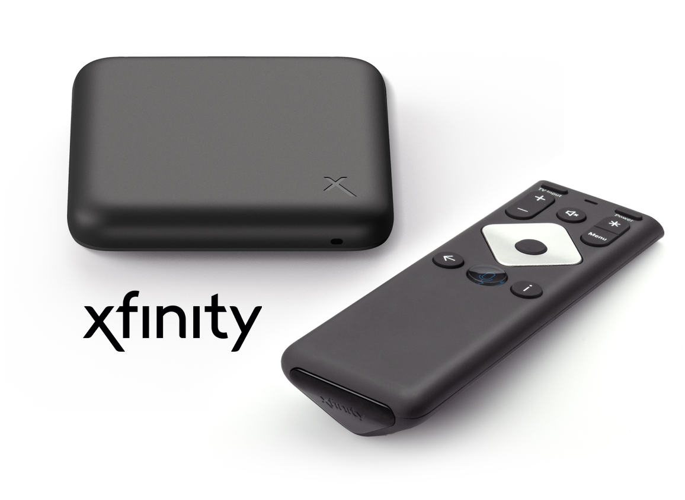
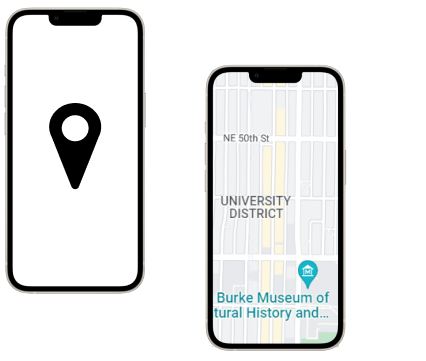
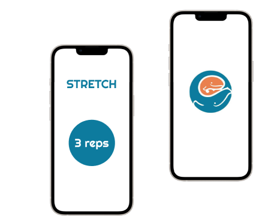
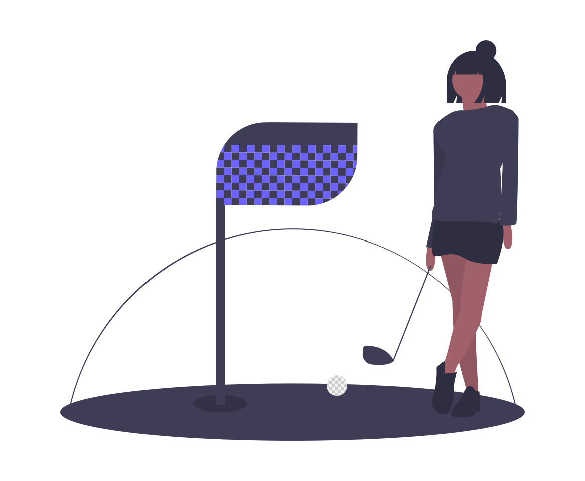

Bridging the gap between students and campus resources

Providing a motivational app for in-patient cancer care units. Innovated on the Seattle Children's Hospital's current exercise rewards system allowing patients more control over their daily activities and implementing
age-appropriate incentives to encourage movement and speeden recovery.

Consulting project for the management of the city of Seattle's 3 municipal golf courses, evaluating the benefit of seasonal rates (green fee structure)
and capital improvements, through running economic regressions, setting up behavioral models, and hypothesis tests.

Conducted stakeholder interviews with ASUW, first year students, transfer students, and prototyped an app for students to connect with other students and campus resources on Figma
Implemented shiny and RStudio to create an interactive website documenting dairy and dairy alternative consumer changes and preferences over the years using USDA data on consumption and production in the dairy industry
Evaluating baby birth weights of nonsmoking compared to smoking mothers using open intro nc data (http://www.openintro.org/stat/data/nc.RData) Using confidence intervals, hypothesis tests, and p values to parameterize the bandwidth of risk associated with smoking during pregnancy
My name is Alicia and I'm a student at the University of Washington! I am majoring in economics and my studies in social sciences has led to my interest in UX research and design as a method of bettering people's lived experiences. This portfolio includes a variety of school work, personal projects, team projects and internship work. Feel free to look around and thank you for your interest!